Leikkaamisella vaikutetaan suuresti video-ohjelman lopputulokseen kokonaisuutena. Hyvällä leikkauksella voit välittää haluamasi viestin tai vaikuttaa ohjelmasi yleistunnelmaan erilaisilla rytmityksillä ja montaaseilla. Yhdistämällä erilaisia kuvia peräkkäin luot mielikuvia ja assosiaatioita. Leikkaaminen on myös ajan hallintaa: lyhyessäkin ajassa voit kertoa suuren määrän tapahtumia ja asioita.
Yleisohjeina leikkaamisessa voit käyttää kuvien keston vaihtelua sekä kuvakokojen hyödyntämistä. Pitkään kestävät rauhalliset kuvat ja toisaalta lyhyet välähdykset luovat vaihtelevan rytmin. Eri kuvakokoja kannattaa yhdistellä siten, että kuvakoon muutos on peräkkäisissä kuvissa tarpeeksi suuri. Käytännössä tämä tarkoittaa, että esimerkiksi haastateltavasta kannattaa laittaa peräkkäin kokokuva ja lähikuva, mieluummin kuin puolikuva ja puolilähikuva.
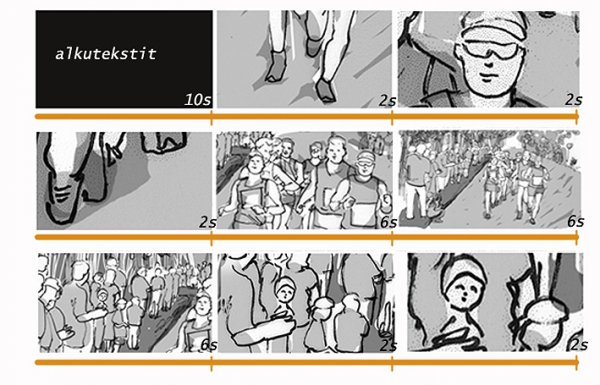
Leikkaaminen tarkoittaa kuvien järjestämistä kerronnalliseksi kokonaisuudeksi. Kuvien kestoa vaihtelemalla syntyy leikkausrytmi.
Tässä oppaassa keskitytään pääsääntöisesti leikkaamiseen OpenShotilla.
OpenShot vaatii 600 MHz prosessorin, 256 MB muistia ja 1 GB kiintolevytilaa. Tämä merkitsee, että voi käyttää OpenShottia melko vanhassa koneessa.
Helpoin tapa asentaa OpenShot Ubuntu Linuxiin on asentaa se komentoriviltä.
Voit asentaa OpenShotin Lucid Lynxissä (10.04 LTS) ajamalla komentoriviltä seuraavan komennon:
sudo apt-get install openshot
Huomaa, että joudut antamaan sudo-komennon vaatiman pääkäyttäjän salasanan.
Koska OpenShot ei tarjoa mahdollisuutta kaapata materiaalia suoraan minidv-nauhalta, voit käyttää kaappaamiseen Kino -ohjelmaa. Kaappaamista varten tarvitset kameran (tai nauhurin) sekä Linux-tietokoneen, joissa on firewire-liitin.
Jos koneessasi ei ole Kinoa, voit asentaa sen ajamalla komentoriviltä seuraavan komennon:
sudo apt-get install kino
Kytke kamera dv-firewire-kaapelilla koneeseen ja tämän jälkeen käynnistä kamera. DV-Firewire -piuhan liitin löytyy useimmista kameroista.
Jos koneessasi ei ole Firewire (IEEE 1394) porttia, voit ostaa siihen firewire-videokortin, jollaisen saa kaupasta noin 15 eurolla.
-Avaa tietokoneen firewire-portti komentoriviltä alla olevalla komennolla ja anna järjestelmänvalvojan salasana.
sudo chmod 777 /dev/raw1394
Valikon alla on neljä projektinappulaa.
Nämä nappulat ovat Uusi projekti, Tallenna projekti, Lisää tiedosto ja Vie video.
Aloita painamalla uusi projekti -painiketta ja määritä projektillesi nimi, tallennuskansio, kesto (viitteellinen) sekä profiili (esim. DV PAL widescreen, jos olet kuvannut dv-kameralla 16:9 -kuvasuhteella).
Tämän jälkeen voit tuoda projektiin Kinossa kaapatut avi-tiedostot, sekä muita video-, kuva- ja äänitiedostoja, joita haluat käyttää projektissasi, lisää tiedosto -painikkeella. Stillkuvat kannattaa skaalata (esimerkiksi Gimpillä) valmiiksi samaan resoluutioon, jota käytät videoissasi. PAL-resoluutio kuvasuhteessa 4:3 (vanhan tv-kuvan muotoinen kuva) on 720x576 px, 72 dpi ja kuvasuhteessa 16:9 (nykyään yleisempi, suorakaiteen muotoinen laajakuva) 1024×768 px. Kaikki ohjelmaan tuodut materiaalit sekä tekstiplanssit näkyvät ohjelman vasemmassa ylälaidassa listana ja niitä voi muokata aikajanalla miten tahansa ilman, että muutokset vaikuttavat listalla oleviin alkuperäisiin materiaaleihin.
OpenShotilla leikatessa projekti kannattaa tehdä valmiiksi kronologisesti eli aloita alusta -logiikalla. Tämä siitä syystä, että toistaiseksi OpenShotissa ei ole mahdollista käytännöllisellä tavalla valita ja siirtää useita leikkeitä samanaikaisesti aikajanalla eri kohtiin. Tästä johtuen projekti kannattaa aloittaa alkuteksteistä.
Tekstityksiin voit käyttää OpenShotin yksinkertaista otsikkoeditoria, joka löytyy ylälaidan tiputusvalikosta title/otsikko. Valitse Uusi ja aloita tekstin luominen seuraamalla oikeassa laidassa olevia painikkaita vaiheittain ylhäältä alas.
Huom! Käytä laajempaa editoria -nappula vie sinut Inkscapeen, joka on astetta monimutkaisempi graafisen suunnittelun työkalu ja varsinkin alottelijoille suhteellisen haastava käyttää, mutta harjaantuneemmille käyttäjille hyvä väline.
OpenShot-ikkunan oikeassa yläosassa on videon esikatseluruutu, jossa voit katsoa yksittäisiä leikkeitä sekä aikajanalle valmistuvaa video-ohjelmaasi.
Ruudun alla on vierityspalkki, jonka avulla voit siirtyä eri paikkoihin videossa.
Vierityspalkin alla näet ohjainnäppäimet, jotka ovat samanlaisia kuin DVD-soittimessa.
Nämä nappulat ovat Siirry alkuun, Edellinen merkki, Siirry taaksepäin, Toista, Siirry eteenpäin, Seuraava merkki ja Siirry loppuun.
Vihje: Voit käyttää näppäimistön nuolinäppäimiä tarkkaan liikkumiseen aikajanalla tai leikkeen sisällä. Välilyönti-näppäin käynnistää ja pysäyttää toiston.
Video-ohjelma rakennetaan aikajanalla oleville raidoille. Aikajana alkaa nollasta minuutista ja jatkuu horisontaalisesti vasemmalta oikealle. Punainen pystyviiva on toistokärki, jota voit liikuttaa hiirellä tai esikatseluruudun ohjaimilla sekä nuoli- ja välilyöntinäppäimillä.
Luo projektiisi riittävä määrä raitoja. Oletusarvoisesti raitoja on kaksi, mutta voit lisätä niitä tarpeesi mukaan. Kukin raita on samanaikaisesti video- ja ääniraita, mutta voit myös ruksia raidan pelkäksi ääni- tai videoraidaksi painikkeista raidan vasemmassa päässä. Jos käytät musiikkia tai jotain muuta yhtenäistä äänitaustaa, työskentelyn kannalta on selkeämpää, jos sijoitat ääniraidat videoraitojen alapuolelle.
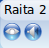
Aikajanan komentonappulat ovat Lisää raita, Nuolityökalu, Leikkaustyökalu, Venytystyökalu, Tarraustyökalu ja Lisää merkki.
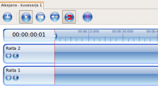
Videoraitojen zoomausta voit säädellä zoomauspalkin avulla. Tämä määrittelee, kuinka monta sekuntia on kahden videoraidan pisteen välillä. Arvot voivat olla 1-200 sekuntia. 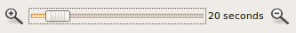
Jos laitat videokuvaa samaan kohtaan kahdelle tai useammalle raidalle, ylin videoraidoista toistuu. Huomaa kuitenkin, että kaikkien päällekkäisten raitojen äänet toistuvat, ellei niitä ole mykistetty. Kustakin aikajanalle viedystä leikkeestä voit - kuvaketta napsauttamalla tai hiiren oikealla näppäimellä - erikseen valita käytetäänkö siitä pelkästään video tai ääni vaiko molemmat.
Huom! Jos laitat samalle raidalle kaksi leikettä päällekäin, toistuu aikaisempi (alle jäänyt) leike (vaikka aikajanalla näkyykin nyt myöhemmin lisätyn leikkeen kuvake) - pyri välttämään tätä päällekäisyyttä.
Napsauttamalla hiiren oikealla näppäimellä leikkeen päällä, voit muuttaa leikkeen kuva- ja ääniasetuksia (esim. määrittää häivytyksiä), tai poistaa leikkeen.
Kun nuolityökalu on valittuna, voit siirtää projektisi leikkeitä aikajanan raidoille sekä vaihtaa niiden sijaintia aikajanalla.
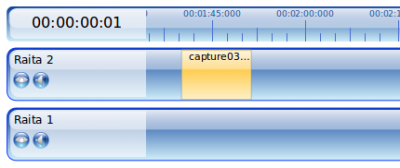
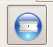
Valittuasi leikkaustyökalun voit napsauttaa leikkeen päällä, jolloin se leikkaantuu kahteen osaan.
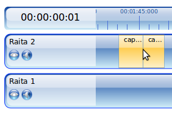
Tämän jälkeen voit taas valita nuolityökalun ja vetää videopätkät erilleen.
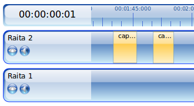
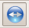
Venytystyökalun avulla voit venyttää videoleikkeen ajallista kestoa, eli muuttaa aikajanalla olevan leikkeen alku- tai loppukohtaa. Tällä työkalulla on helppo poistaa leikkeiden turhat hännät.
Vihje: Voit etsiä soittokärjellä (punainen pystyviiva) haluamasi leikkauskohdan ruudun (framen) tarkkuudella käyttämällä nuolinäppäimiä. Sen jälkeen voit venytystyökalulla poistaa hännän, mutta varmista että tarraustyökalu on valittuna.
Tarraustyökalun avulla videopätkät tarttuvat toisiinsa. Milkäli tarraustyökalu ei ole valittuna, on videoleikkeitä vaikeaa saada alkamaan täsmälleen edellisen leikkeen lopusta.Tavallisesti tarraustyökalu siis kannattaa pitää aina valittuna.
Huom! Voit halutessasi kokeilla myös ohjelman tarjoamia erilaisia siirtymiä ja tehosteita.
Helpoin tapa aloittaa musiikin etsiminen on mennä osoitteeseen www.dig.ccmixter.org ja valita linkki Instrumental Music for Film, YouTube™ Videos and Soundtracks. Voit hakea musiikkia englanninkielisillä hakusanoilla tai käyttämällä advanced dig -toimintoa, jossa voit rajata hakuja erilaisilla määreillä, kuten genre, instrumentti jne. Voit kuunnella kappaleita napsauttamalla hiirellä kappaleen nimeä. Lataaminen onnistuu painamalla kappaleen nimen edessä olevaa alaspäin osoittavaa nuolta, josta avautuu latausikkuna. Latausikkunassa on uudestaan kappaleen nimi ja voit ladata sen pitämällä pohjassa hiiren oikeaa näppäintä nimen kohdalla ja valitsemalla save link as. Kappale latautuu koneesi työpöydälle tai downloads/lataukset kansioon. Kappaleet ovat useimmiten mp3, wav tai aiff -muodossa, ja ne voi tuoda sellaisinaan OpenShotiin. Tuominen tapahtuu samalla tavalla kuin videon tuominen eli Lisää tiedosto -toiminnon avulla (katso edellä).
Muista, että ccMixterin musiikkia voi käyttää pääsääntöisesti vain epäkaupallisissa tarkoituksissa ja kappaleiden nimet, tekijät ja lisenssit (esim. NonCommercial Sampling Plus 1.0) tulee mainita ohjelman lopputeksteissä. Lisenssin nimen ja tarkat tiedot saat näkyviin napsauttamalla kappaleen perässä olevaa cc-lisenssin ikonia.
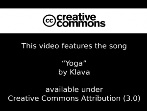
OpenShotin tekstityökalusta löytyy valmis lopputekstiplanssi, johon voi täydentää musiikin tiedot.
Freesound.org etusivun vasemmassa laidassa löytyy linkki search, joka avaa hakutoiminnon. Kirjoita kentään englanniksi hakusana, esim. traffic. Kannattaa kokeilla erilaisia hakusanoja. Voit kuunnella äänen pienestä play-nappulasta joka löytyy haettujen äänitiedostojen yläpuolelta. Napsauttamalla ääniteidoston nimeä pääset lataussivulle ja viimeistään tässä vaiheessa sinun tulee rekisteröityä tai kirjautua sisään sivulle. Lataaminen onnistuu lataussivun oikeassa yläkulmassa olevasta linkistä download. Paina hiiren oikeaa näppäintä ja valitse save link as. Mainitse nettisivun osoite, ääninäytteiden nimet ja tekijät lopputeksteissä.
Kun video-ohjelmasi on leikkauksen osalta valmis, sinun pitää vielä viedä eli exportoida video.
Paina punaista Vie video -nappulaa.
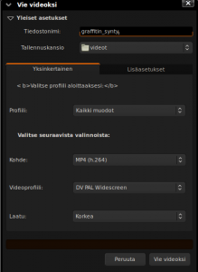
Määritä tiedostolle ensin nimi ja tallennuskansio. Sen jälkeen sinun tulee määrittää videon profiili, tiedostopääte ja pakkaustapa. Yksinkertainen -valikossa on valittavana muutamia vaihtoehtoja, joista voit valita esimerkiksi kuvassa (yllä) näkyvät vaihtoehdot. Yksi suositeltava formaatti on uusi HTML5:een suunniteltu avoin webM, jonka asetukset löytyvät uusimmassa OpenShotin versiossa 1.3 suoraan yksinkertainen-valikosta. Esimerkiksi Youtube käyttää tätä Googlen sponsoroimaa laadukasta formaattia, mutta ihan kaikkialle webM-päätteiset tiedostot eivät välttämättä vielä kelpaa. WebM edellyttää vähintään 0.6 versiota FFMpeg-koodausohjelmasta, joka uusimmissa Ubuntuissa (10.10 alkaen) tulee mukana.
Paina lopuksi Vie videoksi, ja OpenShot tekee videon tiedostoksi, jota voit katsella videosoitinohjelmilla ja jonka voit ladata verkkoon.
Koska Kinon sekä OpenShotin äänenkäsittelyominaisuudet ovat hyvin rajalliset, kannattaa mahdolliset äänityöt tehdä Audacity-ohjelmalla. Voit tallentaa Kinosta kaapatun videon ääniraidan wav-tiedostona ja avata sen muokattavaksi Audacityssä. Huomaa ettei tällöin kannata muuttaa äänitiedoston kestoa, jos siis haluat liittää äänen takaisin kuvaan. Voit tuoda muokatun, wav-muotoon tallennetun äänitiedoston projektiisi Kinon äänisuotimen dubbaus-toiminnon avulla, joka löytyy tehosteista. Tämän jälkeen sinun on vielä tallennettava elokuva uuden ääniraidan kanssa.
Äänen työstäminen Audacityssa on hyödyllistä silloin jos haluat nostaa äänen tasoja tai tehdä vaativamman mixauksen esimerkiksi musiikista, tehosteäänistä ja puheesta. Huomaa, että voit viedä Audacityssä työstämäsi äänen myös OpenShotiin. Käytännössä tämä tarkoitaa sitä, että käytössäsi on erillinen ääniraita, joka sinun tulee uudelleen synkata kuvan kanssa. Työprosessi on jossain määrin työläs, mutta ei mahdoton.
Video-ohjelman lopputulokseen vaikuttaa kuvan ja äänen lisäksi myös paljon graafinen ilme (tekstin fontit, logot, graafiset esitykset jne). Voit halutessasi työstää grafiikoita Gimpillä tai Inkscapellä. Inkscape on integroitu OpenShotiin ja pääset ohjelmaan suoraan kun valitset yksinkertaisesta otsikkoeditorista kohdan käytä laajempaa editoria. Inkscapen oppaan löydät FLOSS manualsin sivulta http://fi.flossmanuals.net/inkscape/.
There has been error in communication with Booktype server. Not sure right now where is the problem.
You should refresh this page.